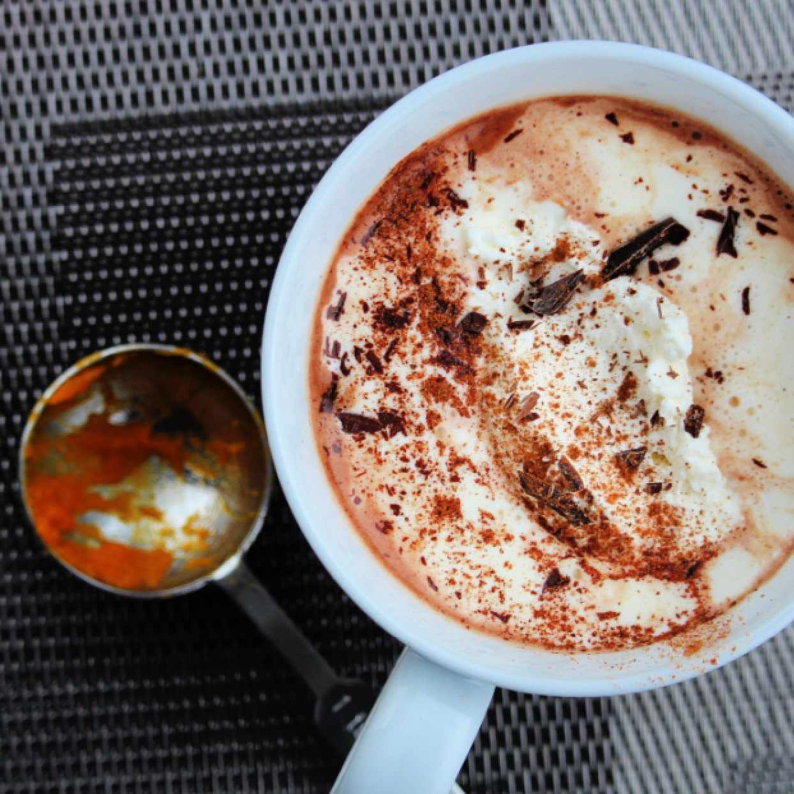

Image courtesy of allrecipes.com
Hot Chocolate
This hot chocolate recipe makes the perfect amount to serve 2 on a chilly winter day. Top with nutmeg or cinnamon and homemade whip cream for best results.
Ingredients
- 30-40 g chocolate chips
- 3 Tbsp unsweetened cocoa powder
- 3 Tbsp granulated sugar
- 1 pinch salt
- 3 Tbsp boiling water
- 1.75 c milk
- 0.25 tsp vanilla
- 0.25 c half and half
Steps
- Combine cocoa powder, sugar, salt, and boiling water in a small saucepan on medium-high heat.
- Bring mixture to a boil, add in chocolate chips, and stir constantly for 2 minutes or until chips are mostly melted.
- Stir in milk and heat until the mixture begins to steam. Do not bring to a boil again.
- Remove from heat and add in vanilla.
- Divide between two large mugs, add 1/8 c. half-and-half to each cup, and enjoy.